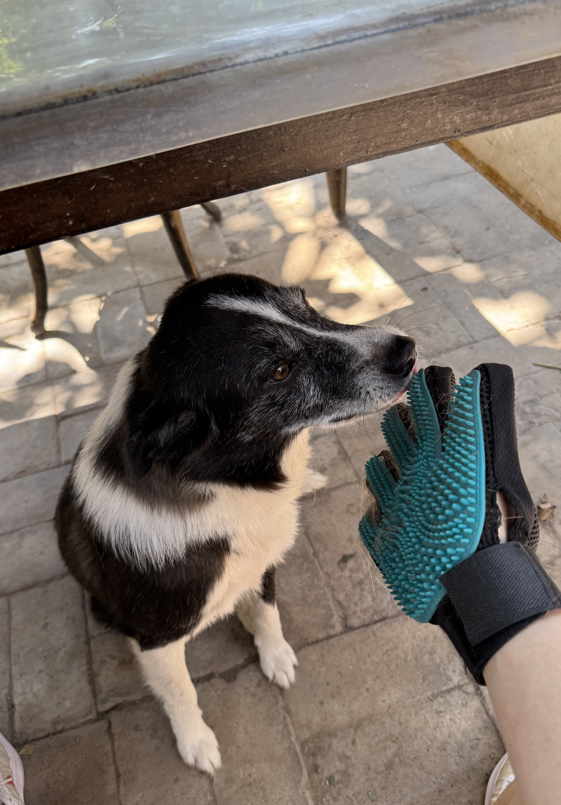

Open to Data Analyst & Data Scientist roles · Toronto
Data Analyst & Data Scientist who turns messy data into dashboards, experiments and clear recommendations, with the machine learning skills to go further when a problem calls for it. M.Eng., University of Toronto.
About
I'm Clarice, a data analyst and data scientist. I like finding the story in the numbers: where users drop off, which customers matter most, and whether a change actually worked. Then I turn that into dashboards and recommendations people can act on.
I've built Power BI dashboards for a startup's founder and investors, run A/B tests that shaped product decisions, segmented 500K+ bank customers by risk, and automated reporting at China Construction Bank. When a problem needs more than analysis, I can build the model or pipeline too, from NLP and retrieval systems to recommendation logic.
I'm finishing my M.Eng. at the University of Toronto. Outside of data, you'll find me behind a camera shooting landscapes and street photography, or out with my dog, Moomoo. I speak English, Mandarin and Japanese.

Experience
Helped grow an early-stage marketplace from 40 to 1,800+ service seekers in under 2 months by building the dashboards and experiments that guided product decisions.
Kept a busy faculty running by rolling out 300+ new devices and resolving 100+ support tickets.
Built an AI translation tool for psychology surveys that improved translation quality by 17.7%, accepted for an oral presentation at IMPS 2026.
Turned customer reviews and funnel data into changes that raised customer satisfaction by 25% and conversion by 18%.
Used customer data for a bank client to improve loan recovery by 8% and lift campaign conversion by up to 25%.
Automated the bank's routine reporting and built quarterly merchant reports that helped grow card acquisition revenue by 10%.
Projects
Multi-platform review scraping and bilingual sentiment analysis system using SnowNLP & BERT. Uncovered that 60% of negative feedback related to response time, driving a 25% satisfaction increase.
Lets anyone ask questions of a database in plain English and get a report back, with no SQL needed. Built with MCP-based agents, a RAG pipeline over Qdrant for finding the right tables, and a Streamlit interface.
Implemented ReAct and Reflexion frameworks with episodic and semantic memory systems, boosting query generation accuracy from ~55% baseline to >90% through reflection-based error correction.
Domain-specific retrieval-augmented generation system for translating psychological surveys across cultures. Validated through ablation studies with COMET metrics and Jaccard similarity analysis.
Proposed a multi-agent hierarchical defense architecture integrating lightweight anomaly detection with explainable causal reasoning via structural causal models and do-calculus for UAV swarm cyber defense. Designed a dual-mode causal decision agent for root cause attribution and interventional prediction using Pearl's causal hierarchy, enabling transparent autonomous mitigation selection.
Education
Publications
An AI-assisted cross-lingual scale adaptation and validation pipeline.
Xia, Z., et al. (2026). International Meeting of the Psychometric Society (IMPS 2026).
Accepted for oral presentationContact
Open to Data Analyst and Data Scientist roles, and ML Engineer roles with a strong data focus. Feel free to reach out.